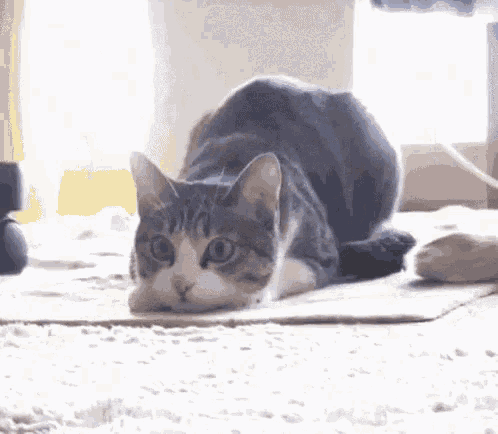

고양이의 특징
고양이는 개와 다르게 아직 많은 야생성을 띄고 있습니다.
대표적으로 날카로운 발톱과 감각을 이용하여 작은 동물들을 사냥하는 것을 즐깁니다.

또한 야행성을 띄어 밤에는 활발하고 낮에는 잠을 많이 자며
발걸음이 매우 조용하다.
고양이의 일상
고양이는 하루의 대부분을 잠을 자며 보내는데, 그렇지 않은 시간에는
먹고 마시기와 그루밍(몸단장)을 한다.
이때 간혹 다른 고양이에게 그루밍을 해주는 경우가 있는데 좀더 우위에 있는 고양이가 그렇지 않은 고양이에게 주로 해준다.
또한 고양이들은 작은 동물이나 물체를 가지고 노는것을 좋아하는데,
이는 고양이들의 야생성이 아직 남아있어서 끊임없이 사냥을 하거나 사냥 연습을 하는 것이다.
3